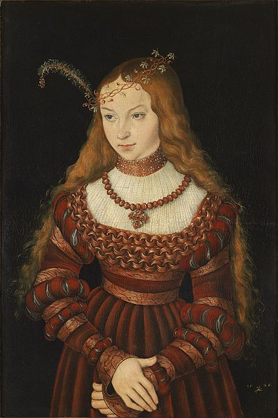
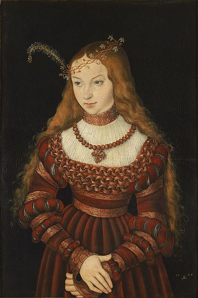

6+1 cudownych żon Henryka VIII
Czwarta żona Henryka VIII
Powtarzająca się historia, czyli o żonach króla Anglii
Anna z Kleve
Anna urodziła się w Düsseldorfie jako druga córka Jana III, władcy księstwa Kleve i jego żony Marii, księżnej Julich-Berg. Wychowywała się na zamku Burg (Solingen). Książę był zwolennikiem łagodnej odmiany protestantyzmu i pozostawał pod wpływem Erazmusa z Rotterdamu. Był sojusznikiem Związku szmalkaldzkiego i przeciwnikiem Karola V. W 1526 jej starsza siostra Sybilla z Kleve wyszła za mąż za Jana Fryderyka I, przywódcę Związku szmalkaldzkiego, uznawanego za orędownika Reformacji. Dwa lata później Anna w wieku 12 lat została zaręczona z Franciszkiem I, księciem Lotaryngii, który wówczas miał 10 lat. Zaręczyny zostały jednak uznane za nieoficjalne i unieważniono je w 1535. Mówiono, że z przyczyn finansowych. Franciszek żądał od jej ojca astronomicznego posagu, lecz ten go odmówił i dlatego związek został unieważniony.
Galeria

Ciekawostki
Ze względu na pogodę jej podróż do Anglii opóźniała się. Kiedy wiadomość o tym, że wylądowała w Dover, dotarła do Londynu, zniecierpliwiony Henryk podążył na spotkanie. Dotarł do Rochester, gdzie przebywał orszak Anny i wedle licznych relacji współczesnych podczas ich pierwszego spotkania Henryk nie zapanował nad swoim wyrazem twarzy, kiedy zamiast pięknego wizerunku z portretu ujrzał kogoś, kogo określił potem w swoim gronie tą flamandzką kobyłą. Anna nie umiała porozumieć się po angielsku. Henryk cenił u kobiet wykształcenie i finezję, ze względu na wychowanie Anny żadnej z tych cech nie mógł u niej znaleźć. Umiała pisać i czytać, ale tylko po niemiecku. Nie otrzymała żadnej formalnej edukacji, potrafiła szyć i podczas podróży do Anglii nauczyła się grać w karty. Była delikatna, cnotliwa i posłuszna, co mogłoby się spodobać Henrykowi, gdyby chciał jej towarzyszyć. Po pierwszym wrażeniu, jakie na nim wywarła, starał się jej jednak unikać, jak to tylko było możliwe. Natychmiast zażądał od swoich doradców znalezienia sposobu na uniknięcie małżeństwa. Jak jednak wyjaśnił to Cromwell, było to niemożliwe bez narażenia sojuszu z państwami niemieckimi.
Fakty
Lata życia
Rodzice
Pochodzenie
1515-1557
Maria z Julich-Berg i John III
Hiszpania
Anna z Kleve
Anna urodziła się w Düsseldorfie jako druga córka Jana III, władcy księstwa Kleve i jego żony Marii, księżnej Julich-Berg. Wychowywała się na zamku Burg (Solingen). Książę był zwolennikiem łagodnej odmiany protestantyzmu i pozostawał pod wpływem Erazmusa z Rotterdamu. Był sojusznikiem Związku szmalkaldzkiego i przeciwnikiem Karola V. W 1526 jej starsza siostra Sybilla z Kleve wyszła za mąż za Jana Fryderyka I, przywódcę Związku szmalkaldzkiego, uznawanego za orędownika Reformacji. Dwa lata później Anna w wieku 12 lat została zaręczona z Franciszkiem I, księciem Lotaryngii, który wówczas miał 10 lat. Zaręczyny zostały jednak uznane za nieoficjalne i unieważniono je w 1535. Mówiono, że z przyczyn finansowych. Franciszek żądał od jej ojca astronomicznego posagu, lecz ten go odmówił i dlatego związek został unieważniony.
Galeria

Ciekawostki
Ze względu na pogodę jej podróż do Anglii opóźniała się. Kiedy wiadomość o tym, że wylądowała w Dover, dotarła do Londynu, zniecierpliwiony Henryk podążył na spotkanie. Dotarł do Rochester, gdzie przebywał orszak Anny i wedle licznych relacji współczesnych podczas ich pierwszego spotkania Henryk nie zapanował nad swoim wyrazem twarzy, kiedy zamiast pięknego wizerunku z portretu ujrzał kogoś, kogo określił potem w swoim gronie tą flamandzką kobyłą. Anna nie umiała porozumieć się po angielsku. Henryk cenił u kobiet wykształcenie i finezję, ze względu na wychowanie Anny żadnej z tych cech nie mógł u niej znaleźć. Umiała pisać i czytać, ale tylko po niemiecku. Nie otrzymała żadnej formalnej edukacji, potrafiła szyć i podczas podróży do Anglii nauczyła się grać w karty. Była delikatna, cnotliwa i posłuszna, co mogłoby się spodobać Henrykowi, gdyby chciał jej towarzyszyć. Po pierwszym wrażeniu, jakie na nim wywarła, starał się jej jednak unikać, jak to tylko było możliwe. Natychmiast zażądał od swoich doradców znalezienia sposobu na uniknięcie małżeństwa. Jak jednak wyjaśnił to Cromwell, było to niemożliwe bez narażenia sojuszu z państwami niemieckimi.
Fakty
| Lata życia | Rodzice | Pochodzenie |
| 1515-1557 | Maria z Julich-Berg i John III | Hiszpania |